Getting started
PRISM is a skin viewer and painter for IL-2 Great Battles (including Tank Crew and Flying Circus) and IL-2 Korea. It reads the aircraft and vehicles straight from your installed games, shows them with your liveries in a studio, a hangar or the sky, lets you paint and decorate skins, and exports pictures, turntable animations and Blender Cycles renders.
PRISM only reads your game installation. It never changes game files, and it never uploads anything.
What you need
- Windows 10 or 11, 64-bit, with a graphics card that supports Direct3D 11.
- An installed copy of IL-2 Great Battles, IL-2 Korea, or both.
- The Microsoft .NET 9 Desktop Runtime (x64). The installer tells you if it is missing and opens Microsoft's download page.
- Blender (optional), only for Blender Cycles renders, Cycles turntables and showcase packs. PRISM can download it for you. Cycles renders on the graphics card: NVIDIA (OptiX or CUDA), AMD Radeon (HIP) or Intel Arc (oneAPI), with a current driver.
Installing PRISM
Run PRISM-v…-win-x64-setup.exe. PRISM installs for your Windows account only, into %LOCALAPPDATA%\Programs\PRISM, and needs no administrator rights. The installer adds PRISM and a link to this guide to the Start menu, and can add a desktop shortcut.
If the .NET 9 Desktop Runtime is missing, the installer says so at the end and offers to open Microsoft's download page. Install .NET Desktop Runtime 9 for x64, then start PRISM from the Start menu.
Testers can still use the zip: unpack it anywhere you can write to, and run PRISM.exe.
To uninstall, use Settings → Apps in Windows. Uninstalling removes PRISM's program files. It keeps your settings, sessions and caches in %LOCALAPPDATA%\PRISM, and any artwork you added to the art library.
The first start
PRISM looks for your games in their usual places (Steam, and the standard IL-2 folders). If it cannot find one, choose Settings → Game installation folder… and pick the game's folder.
The first time, PRISM opens in the light theme, and the welcome screen shows Light and Dark pictures: click one to choose. Later you can switch in Settings.
If PRISM cannot find Blender, it explains what Blender is used for and asks whether it is already installed:
- No, download it for me fetches the official portable Blender from blender.org, checks it, and unpacks it into PRISM's own folder. No installer and no administrator rights are needed.
- Yes, show PRISM where opens a folder picker; PRISM finds
blender.exeinside the folder you choose. - Don't ask again stops the question. You can still export Quick PNGs without Blender.
The tours
The first time PRISM starts, once the library has loaded, it offers a two-minute tour of its main areas: Take the tour or Not now. Either way it only asks once. The tour plays over PRISM itself, lighting up each part as it explains it and showing a few things happening, such as the camera turning and the propellers spinning; everything is put back when it ends.
Watch it again, or the more detailed Painter tour, from Settings; the Tour button in the Painter's header starts the Painter tour too. While a tour plays, Space pauses, the arrow keys move between chapters, and Esc stops. Drag or click the timeline to jump to any moment.
Updates
PRISM checks for a newer version shortly after it starts. When one is available you can Download and install, choose Later, or Skip this version. The download is checked against its published fingerprint before anything is replaced, and PRISM restarts on the new version. Settings → Check for updates now checks at any time, and Check for updates on startup turns the automatic check off.
Your projects, settings and sessions are kept across updates and reinstalls.
The PRISM window
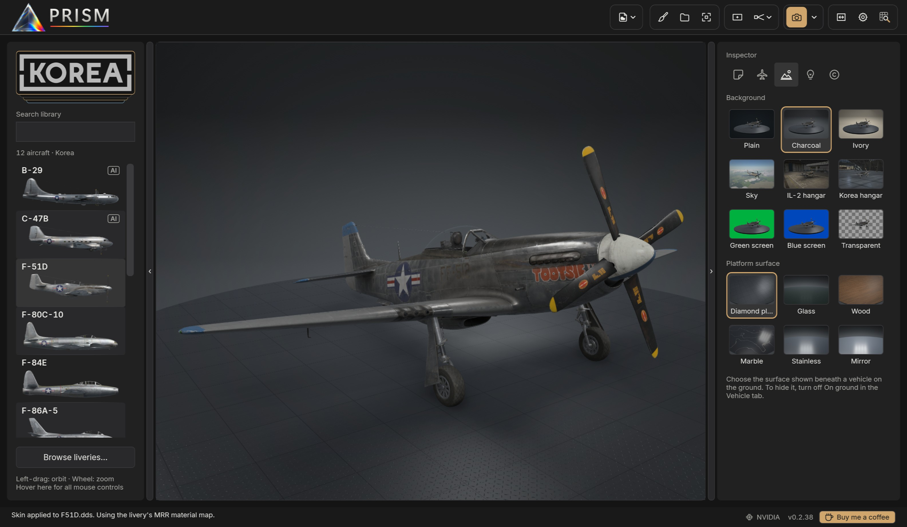
- Library (left): the aircraft and vehicles of the chosen game.
- Header (top): Project, Painter, the export frame and lens, skin options, Export, and Settings.
- Viewport (centre): the vehicle, live, as it will export. Until you choose one, it shows a grid of vehicles from all four collections, drawn afresh each time PRISM starts.
- Inspector (right): the Scene, Lighting, Vehicle, Decals and Watermarks tabs.
- Status strip (bottom): what PRISM is doing, and the version.
The arrows at the edges of the library and inspector hide or show them; drag their inner edge to resize them.
The library
The game logos at the top choose a collection: IL-2 Korea, Great Battles aircraft, Tank Crew ground vehicles or Flying Circus aircraft. Each vehicle is shown by name with a side-view picture. Type in the search box to filter; the search also knows full names, such as Mustang or Thunderbolt.
Aircraft marked AI are not flyable in the game (for example the Korea B-29 or the Great Battles B-26). You can view, paint and render them like any other, but the game may not show custom skins on them.
Click a vehicle to load it. The library remembers your game and reloads quickly; it checks the installation for changes in the background.
Moving around
| Orbit and tilt | Left-drag |
| Pan | Right-drag, middle-drag or Shift+drag |
| Zoom | Mouse wheel, towards the pointer |
| Fit the vehicle | Double-click, or Fit |
| Turn the vehicle itself | Ctrl+left-drag (yaw and pitch) |
| Roll the vehicle | Ctrl+wheel, 5° a notch |
| Reset the view | Ctrl+R: the default three-quarter view, fitted |
Turning the vehicle with Ctrl turns it about its centre without moving the camera, and exports keep that pose.
Export frame and lens
Frame in the header shows the 16:9 area that Quick PNG and Blender export; the area outside it is dimmed. Adjust frame lets you drag the frame or resize it from a corner, and Reset restores the largest centred frame. With Frame off, exports take the whole viewport at its own shape.
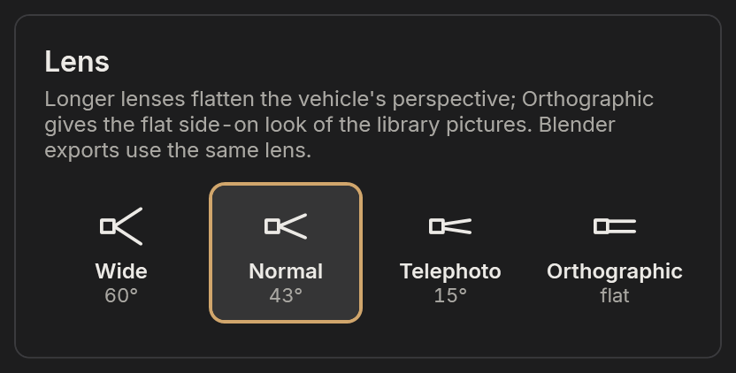
The Lens button beside Frame chooses the lens: Wide (60°), Normal (43°, the usual view), Telephoto (15°) or Orthographic, a flat side-on look like the library pictures. The camera stands back as the lens narrows, so the vehicle keeps its size. Blender renders use the same lens, and projects remember it.
Settings
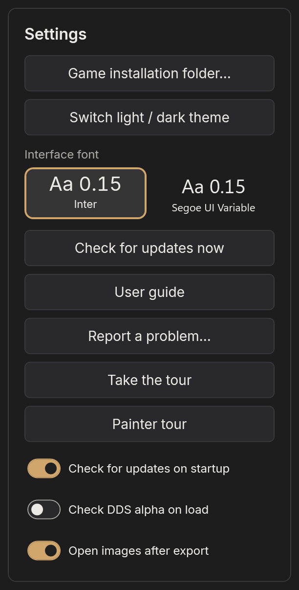
Settings holds the game folders, the light or dark theme (PRISM starts light the first time), the interface font (Inter or Segoe UI Variable), update checks, this guide (User guide, which opens it on PRISM's website), Report a problem…, both tours (Take the tour and Painter tour), the DDS alpha check, and whether exported images open automatically.
Liveries
PRISM lists every livery it can find for the loaded vehicle: the game's own packed skins, and loose skins (DDS or PNG) in the game's skins folder. The Skin options menu in the header gathers everything to do with the livery.
The livery browser
Choose Skin options → Browse liveries… (or Browse liveries… under the library). The browser shows a picture of every livery.
- Click a picture to try the livery while the browser stays open; double-click to apply it and close the browser.
- Search by name, or show only Favourites or Recently used. Click the star to make a livery a favourite.
- Open folder opens the folder of a loose skin. Refresh looks for new or changed files.
The pictures use a fixed camera and studio light, so liveries compare fairly. They are made on your PC and kept in a local cache.
Your own skins
Drop a DDS or PNG onto the window, or load it from Skin options, to apply it. PRISM keeps the texture's full resolution. Great Battles liveries made of two sheets load together.
Live DDS (in Skin options) watches the loaded skin file while you work on it in Photoshop, GIMP, Affinity or another editor: save to the same file and PRISM refreshes within a second or so, keeping your view. PRISM never writes to the file it watches.
Surface finish
A livery's finish (how shiny or matt each part is) comes from the texture's alpha channel in Great Battles and from a separate MRR map in Korea. Skin options → Surface finish repairs a finish that is missing or wrong:
- Automatic repair restores missing Great Battles alpha from the original aircraft.
- Livery's authored finish, Original vehicle finish and Matte fabric / paint choose the finish outright.
- Korea aircraft can also show the MRR channels (metallic, roughness, reflectivity) in greyscale, for checking. These views never change files or exports.
Save repaired DDS… writes the repair to a DDS, backing up any file it replaces; Save repaired PNG copy… saves a copy without touching the source.
When Check DDS alpha on load is on (Settings), loading a loose Great Battles skin with broken alpha offers Back up and repair, or Keep unchanged.
The skin inspector
The magnifier at the right of the header opens the Skin inspector: the flat texture beside the vehicle. Choose Colour, Alpha / finish, Normal map or Korea MRR. Click a panel on the vehicle to find it on the texture: a ring pulses at that spot. The inspector never changes files or exports.
Scene
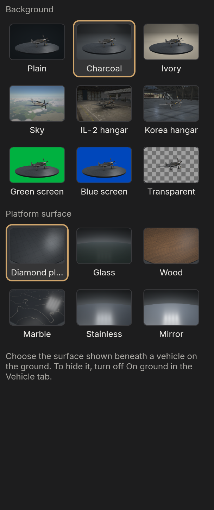
The Scene tab chooses where the vehicle stands and what surrounds it.
Backgrounds
- Charcoal and Ivory studios: seamless curved backdrops, darkening gently towards the corners.
- Plain: a flat background colour.
- IL-2 hangar (needs Great Battles) and IL-2 Korea hangar (needs Korea): the games' own hangars, with their lamps. The vehicle stands on the hangar floor.
- Sky with clouds: the vehicle in flight, lit by the sun and sky.
- Transparent cutout: a PNG with a real transparent background, shown on a checkerboard. Include ground shadow keeps the vehicle's shadow.
- Green screen and Blue screen: flat key colours for compositing.
The platform
On the ground in a studio, the vehicle stands on a round platform sized to it, the same platform turntables use. Choose its surface: diamond plate, glass, wood, marble, stainless steel or mirror. On ground (Vehicle tab) switches between standing and flying.
Sky
With Sky with clouds, the sky settings appear:
- Presets: Clear blue, Daylight, Sunrise, Sunset and Overcast.
- Sun: elevation, direction and haze.
- Clouds: cumulus, stratus or cirrus, with coverage, density, thickness, size, the layer's height above or below the vehicle, and clear space around it. New cloud arrangement reshuffles them.
- Ground detail: an optional countryside of fields, woods, rivers and villages, with height above ground, scale and hills.
- Photo skies: photographed skies instead of the simulated one. The Poly Haven browser finds free skies on polyhavenskies.com and downloads the size you choose, checked, into your photo skies.
The viewport and Blender draw the same sky and clouds; Blender's light through the clouds is a little more exact.
Lighting
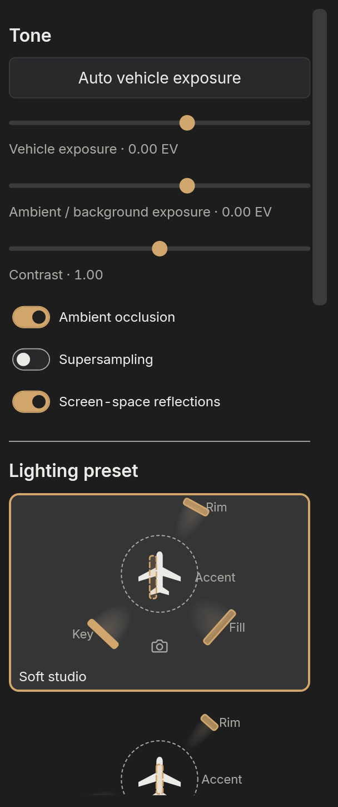
Presets and lights
Lighting presets set up the four studio lights in one click, each shown as a small diagram: Soft studio, Shape & detail, Polished metal, Rim highlights, Dramatic and others. Reapply returns to the preset after changes.
Open Adjust individual lights to set each of the four lights: a Softbox (broad, soft light) or a Spotlight (a beam of adjustable width), with its position, height, size, brightness and aim. Rotate with vehicle makes a light follow the vehicle's pose instead of staying put in the studio.
On the ground, Light rotation turns all four lights around the vehicle together, and Light intensity brightens or dims them together, keeping their balance.
Tone
- Vehicle exposure brightens or darkens the vehicle only.
- Ambient / background exposure brightens or darkens the background.
- Contrast sets the spread between dark and light.
Click a slider before using the mouse wheel on it, so scrolling the panel never changes a value by accident.
Auto vehicle exposure measures the vehicle alone and sets vehicle exposure and contrast for a consistent look: its midtones at about 45% grey, whatever the vehicle or light. Highlights are kept below white, measured by each pixel's brightest colour, so saturated paint doesn't clip; the smallest reflections, such as a glint on glass or bare metal, may clip rather than darken the whole vehicle. When the vehicle's tones are bunched, it adds contrast (up to 1.30) so its shape reads. Use it again after changing the camera, the livery or the lighting.
Effects
- Ambient occlusion darkens creases, wheel wells and the ground beneath the vehicle, where nearby surfaces block the light.
- Screen-space reflections let polished metal and gloss paint reflect the vehicle's own parts and the floor.
- Supersampling draws the viewport at twice the size and averages it down, for smoother fine detail, at about four times the work.
Quick PNG and viewport turntables use ambient occlusion and reflections as the viewport shows them. Blender computes both itself.
The Vehicle tab
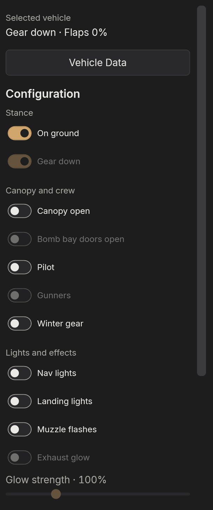
The Vehicle tab sets up the loaded aircraft or tank. Options the vehicle does not have are hidden or greyed out.
- On ground: standing on the platform or flying. Landing gear can be extended in flight too.
- Flaps: 0 to 100%, for aircraft with animated flaps.
- Canopy open, and Bomb bay doors open on the bombers that have them.
- Pilot and Gunners: the game's seated crew. The B-29 and C-47B show their crew inside the fuselage as gunners.
- Navigation and Landing lights, where the model has them.
- Spinning props, with speed and shutter, for a blur like a photograph's. Muzzle flashes poses the fixed guns firing, as a camera catches a burst: about half the guns mid-flash, and a tracer line ahead of every gun in its nation's colour (red for American and Soviet aircraft, yellow-orange for German and Italian, red-orange for British and French), and gun smoke at the muzzles; Exhaust glow lights jet exhausts.
- Exhaust flames, on piston aircraft whose models carry the game's exhaust flames (most Great Battles fighters and bombers): while the propellers spin, each exhaust stub flames at its moment in the engine's firing order, timed from the propeller speed. The shutter decides what a frame catches: at a fast shutter you catch a few stubs mid-flame, and a slower one shows more of them glowing. Turntable videos follow the engine frame by frame.
- Loadout: the game's own weapon and fuel-tank configurations.
- Open crew hatches, for tanks.
- Vehicle Data opens the game's description, history and diagrams for the vehicle, where the game provides them.
All of these are remembered, saved in projects, and used by every export.
Decals and watermarks
Decals
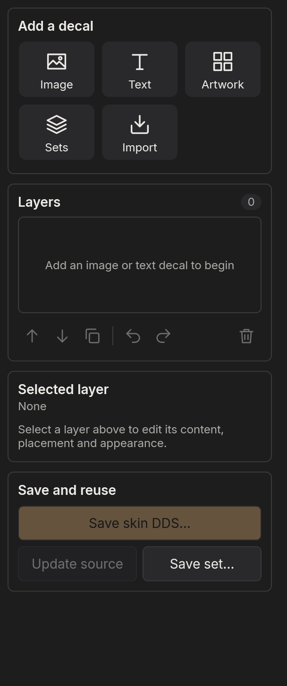
The Decals tab places images and text on the vehicle's painted surface: squadron markings, numbers, nose art. Add an image or text, then move it with its centre handle, and resize or rotate it. Each decal is a layer you can reorder, hide and adjust: blend, finish (how it catches the light) and weathering.
Save a project to keep the decals editable, or Save skin DDS… to bake them into a loose skin for the game.
Watermarks
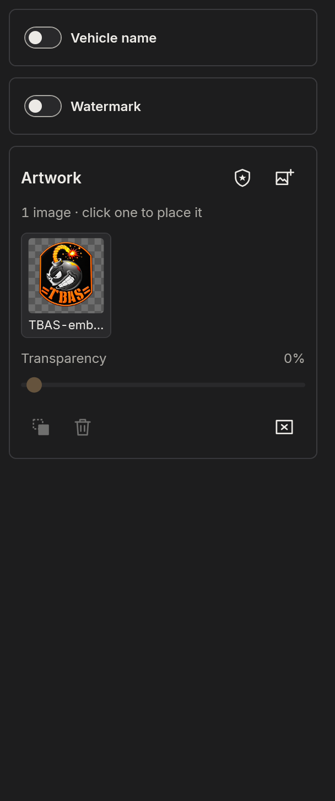
The Watermarks tab adds overlays that sit on the picture, not on the vehicle:
- Vehicle name: the vehicle's full official name, or your own text, with a font, transparency and emboss.
- Watermark: your signature or group name.
- Artwork: images you add (PNG, JPEG, BMP, TIFF), copied into PRISM's art library. Add badge places the vehicle's official badge from your installed game.
Drag an overlay to move it and its corner to resize it; the Position grid snaps it to a corner, an edge or the centre of the export. Overlays appear in every export, inside the export frame, without their editing handles.
Painter
Choose Painter in the header to paint the loaded livery. The flat texture sits beside the live 3D vehicle; 2D, Split and 3D change the layout. Painting never changes the original skin: your paint lives in layers above it. New to the Painter? The Tour button in its header plays a three-minute tour of it.
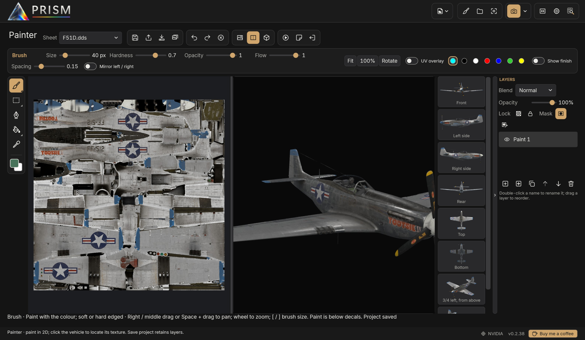
Click the vehicle to find that spot on the texture: a ring pulses there, and PRISM switches to the right texture sheet.
Tools
The tool rail down the left holds groups of tools; hover a group with a corner mark to open its flyout.
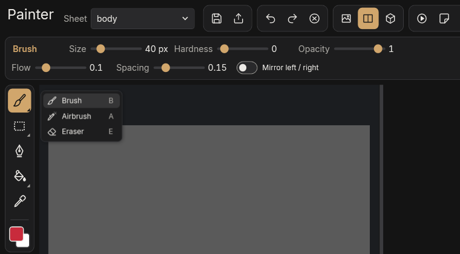
| Tool | Key | |
|---|---|---|
| Brush | B | Size, hardness, opacity, flow, spacing |
| Airbrush | A | Keeps building while held still |
| Eraser | E | Removes paint from the layer |
| Rectangle, Ellipse, Polygon | M, O, L | Selections: new, add, subtract, feather |
| Path | P | Editable outlines, which can snap to UV lines |
| Bucket | G | Fills connected colour, or a pattern |
| Replace colour | R | Swaps a colour everywhere, keeping its shading |
| Eyedropper | I | Picks a colour |
X swaps the foreground and background colours; [ and ] change the brush size. The context bar across the top shows only the active tool's settings.
Mirror left / right paints the matching spot on the vehicle's other side, wherever it lies on the texture. The UV overlay shows the texture's islands as a guide; it never enters your paint.
For painting a panel, draw its outline with Path first, then Path → selection and fill it or paint inside it: panel lines on the texture are not always closed.
Layers
The Layers panel on the right works like Photoshop's or Affinity's: an eye to show or hide each layer, locks, opacity, Normal or Multiply blending, and a mask (black hides, white shows). Double-click a name to rename it; drag a layer to reorder it.
Finish layers
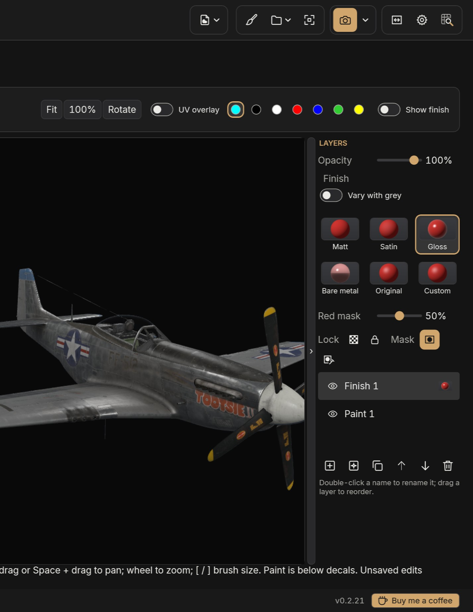
New finish layer adds a layer that paints finish instead of colour: how matt, glossy or metallic the skin is. Paint it with the usual tools; the colour you choose is ignored. Pick its finish in the Finish tiles: Matt, Satin, Gloss, Bare metal, Original (back to the skin's own), or Custom for exact values (a gloss level for Great Battles; metallic, roughness and reflectivity for Korea). Changing the finish later re-finishes everything the layer covers, with no repainting. While a finish layer is selected, the area it covers shows red on the flat view, so you can see where you have painted; the Red mask slider under the finish tiles sets how strong the red is, and it is never part of the skin. Show finish, above the canvas, shows the finish in grey instead of the colour. Exported skins carry it as the game expects.
Vary with grey lets one finish layer hold a range. Pick a Black and a White finish, then paint with the Value slider: black gives the Black finish, white the White, grey something between, which suits streaks and worn paint. In Great Battles, a layer with a Bare metal end switches from paint to metal at 50% grey instead of fading, because the game's in-between values look like wet paint; in Korea it fades smoothly.
With a finish layer selected, Replace colour becomes Finish by colour: click a colour to give every part of the skin in that colour the layer's finish.
Saving
- Save project keeps everything editable: layers, masks, paths and palettes. Keep the
.prismfile and its.prism.assetsfolder together. - Export skin writes the painted DDS sheets at full resolution for the game, backing up any file it replaces.
Quick PNG and Blender exports include your paint. If PRISM closes unexpectedly, it offers to recover your work when it next starts.
Exporting
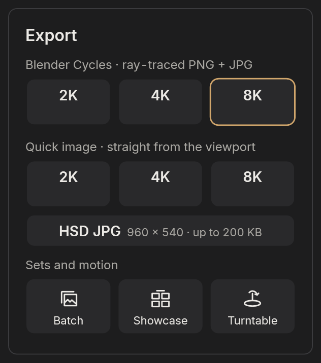
Export in the header repeats the export outlined in the menu; the arrow beside it opens the menu. Every export uses the current livery, pose, lighting, background, overlays and, when Frame is on, the export frame.
Quick image
Quick PNG renders on your graphics card in seconds:
- 2K (1920 × 1080) and 4K (3840 × 2160) PNG, each smoothed by rendering larger and averaging down.
- 8K (7680 × 4320) PNG, plus a 90% quality JPG.
- HSD JPG: a 960 × 540 picture under 200 KB. A crop window lets you choose the area.
With Transparent cutout as the background, Quick PNGs keep a real transparent background.
Blender Cycles
Blender renders the scene with Cycles, a ray tracer, for the most realistic light, reflections and glass. Choose 2K, 4K or 8K; each saves a PNG and a 90% quality JPG. A progress bar follows the render, and you can keep working meanwhile. Blender uses your graphics card when it can.
Batch, showcase and turntable
- Batch liveries renders a list of liveries for the current vehicle through Blender, each with the same camera and scene, into a folder of its own. Cancelling keeps the finished images.
- Showcase presets and packs previews presentation styles (Clean studio, Museum, Squadron poster, or your own), saves named camera views, and exports a coordinated set of pictures with an optional contact sheet.
- Turntable GIF or MP4 exports the vehicle turning once, looping without a jump. Choose the renderer (the viewport in seconds, or Blender Cycles), MP4 or GIF, size, seconds per turn, frame rate, direction and camera. The window previews the turn and estimates how long the export will take.
Open images after export (Settings) opens finished pictures in your usual image viewer.
Projects and sessions
Sessions
PRISM reopens where you left off: the vehicle, livery, camera and scene you were viewing when it closed, including changes you never saved. This session is private to PRISM and never overwrites your project files.
Projects
Project → Save project (Ctrl+S) or Save project as… (Ctrl+Shift+S) writes a .prism file wherever you choose. Load project… (Ctrl+O) brings back the vehicle and its liveries, camera, lens and pose, the vehicle's options, the background and lights, exposure and contrast, overlays, decals and Painter layers.
A project refers to your skin files and artwork where they are; it does not copy game files or outside images, so keep those files available. Projects with Painter layers keep them in a .prism.assets folder beside the project file: move the two together. Choose project folder… sets where the file dialogs open.
Troubleshooting
Common questions
PRISM does not start. Install the Microsoft .NET 9 Desktop Runtime (x64) from Microsoft's website, then start PRISM again.
The library is empty. Choose Settings → Game installation folder… and select the game's folder. After a game update, restart PRISM so it reads the new files.
A skin looks white, flat or too shiny. Its finish data may be missing: try Skin options → Surface finish → Automatic repair. Check the lighting too: a very bright preset or high vehicle exposure bleaches paint. Auto vehicle exposure is a good starting point.
Blender renders fail. Check that Blender is found (PRISM offers to download it), and that your graphics driver is current. A failed render keeps its working files and log, so the problem can be found.
MP4 turntables fail on Windows N editions. Install Microsoft's Media Feature Pack, or export a GIF.
The panel of game logos stays open after starting. It closes a few seconds after PRISM has settled, unless the pointer is over it.
PRISM ran into a problem. If something unexpected goes wrong, PRISM says so instead of closing: choose Keep working (save your project soon), Close PRISM, or Report a problem. Settings → Report a problem… does the same for anything that looks wrong without an error.
Reporting a problem. Report a problem puts PRISM's log and a few facts about your PC (Windows, graphics card, screens, which games are found) into a zip in %LOCALAPPDATA%\PRISM\reports and opens that folder. Open the Issues page then starts a new issue on PRISM's GitHub page (github.com/riaanjutte/PRISM-Distribution/issues): say what you were doing and drag the zip into it. Your Windows user name is taken out of the file paths it contains.
Where PRISM keeps things
- Program:
%LOCALAPPDATA%\Programs\PRISMwhen installed; wherever you unpacked the zip otherwise. - Log:
PRISM.logbesidePRISM.exe, recording startup, projects, skins, exports and errors. Report a problem includes it for you. - Settings, session and caches:
%LOCALAPPDATA%\PRISM. Deleting the caches is safe: PRISM rebuilds them. - Artwork library: the
Resourcesfolder besidePRISM.exe.
About PRISM
PRISM reads game data from your own installation; no game files, models or textures are included with it. It is an independent project, not made or endorsed by the makers of IL-2. The licences of the components it uses are in the docs\licenses folder beside PRISM.exe.